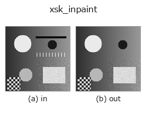

restoration op• 資料種類:image → image
• 呼叫:fullseye.apply(img, "xsk_inpaint", a=0.5, b=0.5)(2-D 的模型是一張圖 + 兩個純量旋鈕 a,b∈[0,1])

*圖為在 128×128 合成輸入上實際執行的輸出。左為輸入，右為輸出。點雲以俯視散點顯示(亮度 = z)，一維序列為折線，體資料為沿 z 的最大值投影，影片為中間影格，複數影像為振幅；無法成像的回傳值直接顯示數值。*
*旋鈕 a 不改變輸出(實測: 0.1 / 0.5 / 0.9 相同)。*
*旋鈕 b 不改變輸出(實測: 0.1 / 0.5 / 0.9 相同)。*
換別的影像(合成場景 / 照片 / 硬幣。上排為輸入，下排為對應輸出。旋鈕取預設):
▸ xsk_inpaint: other inputs (docs site)
*未展示彩色 (H,W,3) 輸入: 此運算子把顏色通道當作第三個空間軸(跨通道)。請按通道分別呼叫。*
透過估計並填補缺失區域進行修復（inpainting）。
> 以下的詳細說明為原文 —— 摘要與標題已翻譯。
極端に明るい(>0.92)/暗い(<0.08)画素を「欠損」とみなして自動マスクし、
skimage の biharmonic inpainting(調和方程式に基づく補間)で周囲から
滑らかに埋める。
マスクが無ければ(欠損が見当たらなければ)入力をそのまま返す。`a`,
`b` は未使用。しきい値が固定なので、本来ハイライト/シャドウとして
意味のある画素まで「欠損」扱いされ埋められてしまう場合がある。
• gallery2d_smoothing_rank 族使用指南
• 範例資料目錄(下載 URL / 授權) —— 2-D 用 skimage.data(BSD/公有領域)加合成圖,3-D 給出真實資料源(Stanford/PDS 等)的下載 URL。
• 運算子來歷與參考文獻 —— 該運算子族所依據的研究/方法出處。
• 演算法的正典(作者・年份)與用途見上面的族使用指南。
下面的程式已確認可以執行(與圖相同的輸入)。在 Studio 說明中，此區塊會變成按鈕，可當場載入並執行。
xsk_inpaint 0.50 0.50
▸ Load this pipeline · Load & run
• gallery2d_smoothing_rank — py -3.11 examples/gallery2d_smoothing_rank.py
image 作為輸入)identity · gaussian · mean_box · bilateral · unsharp · median · min_filter · max_filter
restoration)xsk_richardson_lucy · xsk_unwrap_phase · xcv_inpaint · xsk2_wiener · xcv3_inpaint_ns · iv_richardson_lucy · iv_wiener_deconv_spatial · iv_unsharp_deblur
*Provenance: ops.py — 2D 運算子登記表。本條目由 tools/opdocs.py md 自動產生(請勿手動編輯)。*
© 2026 Kazufumi Furuse — Fullseye operator documentation. Licensed under Apache-2.0.
{kind=link}